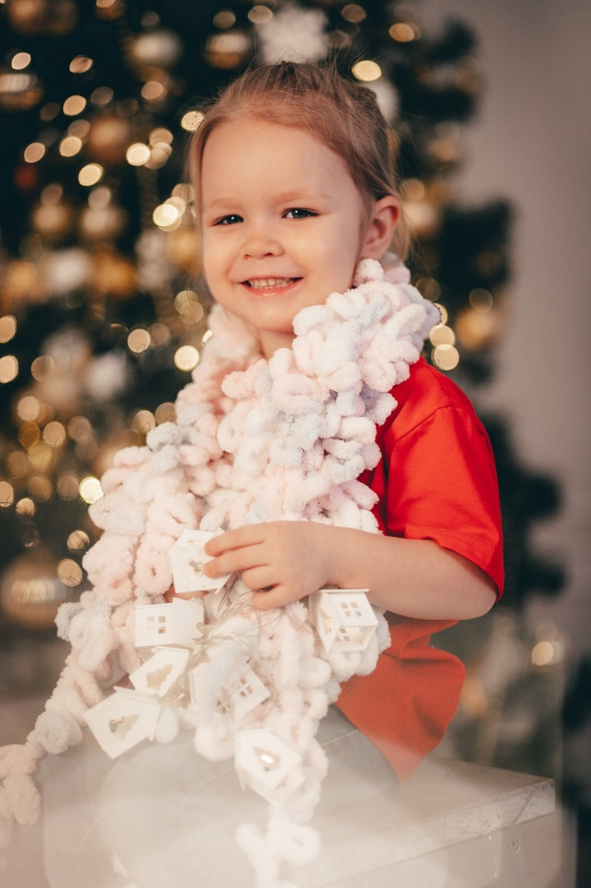
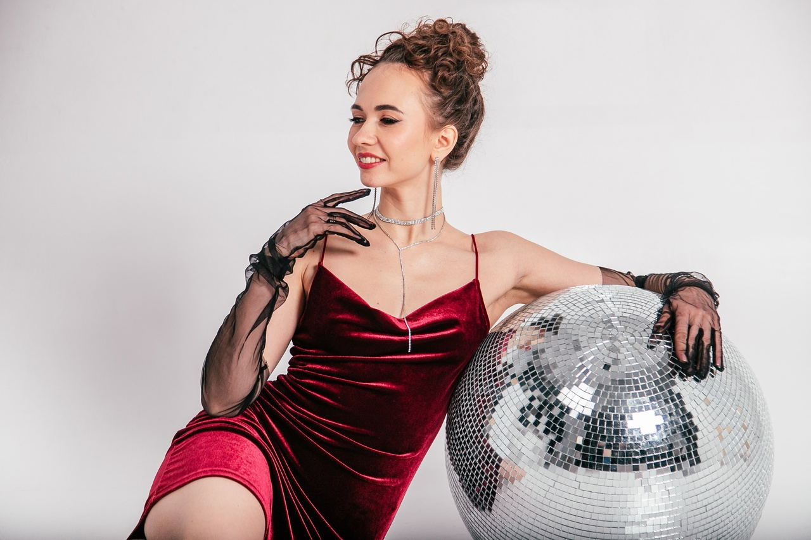
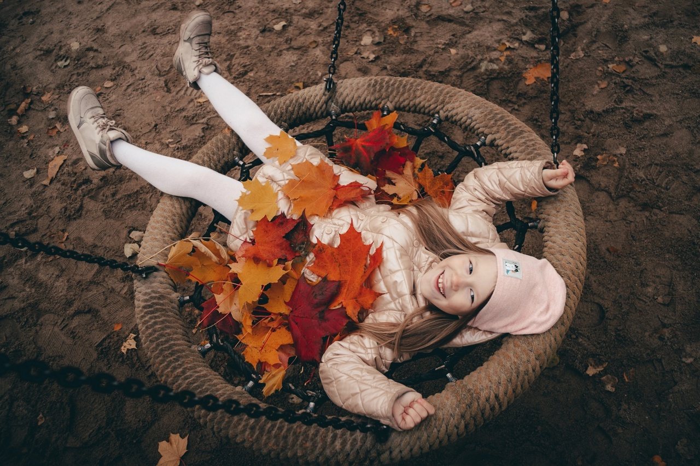
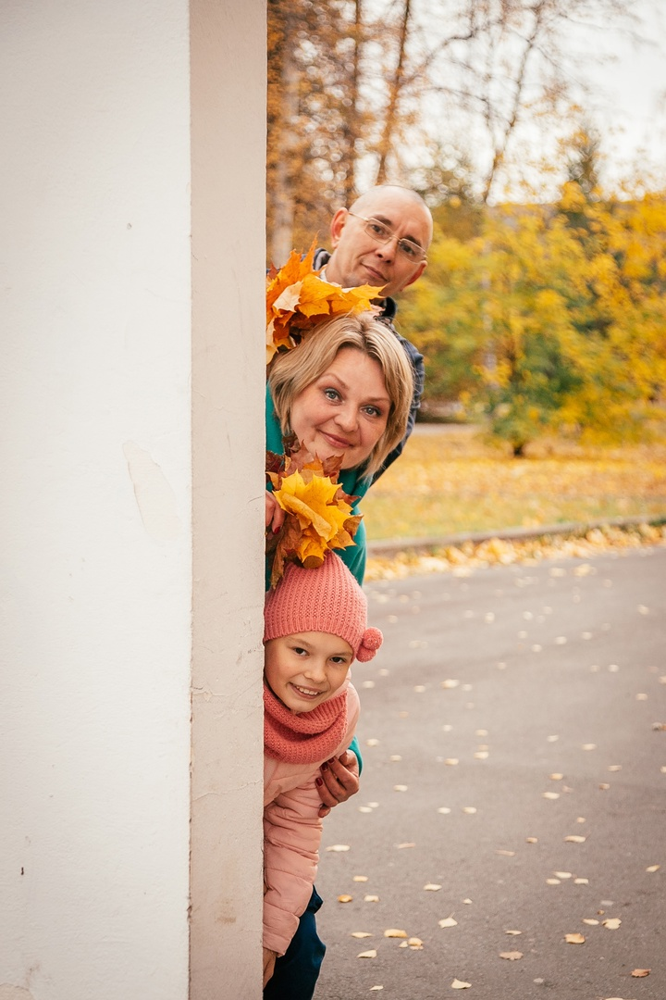

Настя живет в Петрозаводске.
Она поделилась, как прохождение курса помогло ей преодолеть творческий кризис и начать зарабатывать на своем увлечении фотографией.
Благодаря структурированному обучению и поддержке куратора, Анастасия смогла создать уникальные предложения и привлечь клиентов, несмотря на первоначальные трудности и страхи.
Мы взяли у нее короткое интервью:
— Настя, расскажи, что было до курса, какой средний доход был в месяц? Сколько клиентов? Как их искала?
— Если, честно, то практически ничего не было. Хоть в фотографии уже давно. У меня была своя группа и даже там что-то пыталась оформить, но никогда ее не продвигала и не рекламировала. Это было так: время от времени ко мне приходили друзья, знакомые и я делала для них красоту. Стабильного дохода не было. А перед самой покупкой курса у меня вообще был кризис. Я камеру в руки не брала несколько лет. Об этом вообще нигде ещё не писала, поэтому – это эксклюзив.
Сейчас созрела и готова это обнародовать. В определённый момент сошлись все звёзды. И у меня открылось новое дыхание, фонтан идей - не знаю как это назвать.
1. Моему первому сыну должно было исполниться только-только 1,5 года. Сама понимаешь, к чему это ведёт. Минус одно пособие и плюс садик. А жить на что?

2. Поездка с подружками в Калининград. Я расслабилась и поняла, что хочу чаще так выбираться с друзьями. Не просто за город, а куда-то подальше путешествовать.
3. Покупка полнокадровой камеры. Это было откровение. Резко перейти с кроповой камеры на полный кадр, да ещё и премиум класс! Это был профессиональный экстаз! И после этого всего в моей жизни захотелось перемен. Как у Цоя: Перемен! Требуют наши сердца!
Вот и мне захотелось. И у меня начался круговорот! Покупка курса, разработка нового уникального предложения - фотопроменад по г. Петрозаводску, сотрудничество с многими и в разных сферах людьми, новое обучение по фотографии и многое другое. Новые путешествия и возможности. Хоть доход меня ещё совсем не устраивает, но мелкими шажками я продвигаюсь к цели.
— Насть, то есть толчком к покупке курса было то, что ты поставила себе цель начать наконец-то зарабатывать на своих умениях? Скажи, а какие-то сложности были во время обучения на нашем курсе? Насколько сложно было учиться? За сколько прошла обучение?
— Всё верно! Моей целью стало зарабатывать на фотографии, ведь я это могу и умею делать классно. Но не знала как и где искать клиентов. Поэтому был, конечно, страх, что ничего не получится. Как здорово, что тогда и вы мне попались и я с трясущимимися руками, но все же зашла на курс. После прохождения 20 уроков курса я застопорилась. Как раз перед рекламой. Были кдиенты и появился какой-то непреодолимый барьер. Был страх того, что я не справлюсь с еще большим наплывом клиентов.

А учиться было легко. Ведь в уроках всё разложено по полочкам и показано в видео и скринах. Сложно было только разобраться в схеме рекламы, но на это просто нужно чуть больше времени)) Первые 20 уроков я прошла за 3 месяца с куратором. Затем был стопор на год. Последние 8 уроков по рекламе прошла меньше чем за месяц. Но можно и быстрее. Просто с двумя детьми иногда сложно и работать, и за ними присматривать.
— Каково было работать с куратором, что было полезно, мотивировало ли это тебя? Как считаешь, без куратора получилось бы так же?
— Хороший вопрос. Я уже спрашивала себя об этом. Куратор был бы очень полезен и в последних 8 уроках. Но я профукала свой шанс. А так, конечно, с куратором легче. Опытный взгляд со стороны очень полезен. И мотивирует на разносторонний подход. Без куратора тоже бы всё получилось, но медленнее. Мне, например, всегда нужен волшебный пендель, что бы двигаться дальше.

— Жопочка ленивая, как все мы) Какие сейчас действия делаешь для привлечения клиентов? Как часто пишешь посты? Запускаешь ли рекламу?
— Я часто себя именно так называю) Я ещё та "ленивая жопочка"))) Для привлечения пишу посты, как о личном, так и продающие. Пишу когда есть вдохновение. Когда есть о чём писать.
На фотопроменад собираю группы 1-2 раза в месяц. Тогда и пишу посты с опросом. 2-3 поста каждый раз. Налаживаю различные связи офлайн. Поноценную рекламу ещё не запускала. Пока на стадии экспериментов.
— А можешь поделиться, как изменилась жизнь, когда увеличился доход? Может что-то купила себе? Съездила в путешествие? Что-то смогла сделать, чего раньше не могла позволить себе) Знаю, что в мае у тебя пополнение было, поздравляют с этим замечательным событием!
— Много, что произошло. До рождения малыша, мы успели съездить в отпуск, который ждали более 8 лет. Купили машину. Но сейчас в полную силу не могу работать. Практически все силы и время уходят на семью и детей. Восстанавливаюсь после родов. Сложно работать. Днем с малым, ночью не каждый раз даёт поработать.

— Но я знаю, что все же сьемки ты берешь? Хоть по чуть-чуть как-то умудряешься выкроить время?)
— Да, великих доходов нет. Но свои 10 съемок я легко нахожу, даже отказывать иногда приходится. Пока, можно сказать, на лайте. Но и это большой прогресс, так как до курса вообще не понимала как и где можно брать клиентов) А теперь я знаю, что мне делать, как увеличить количество заявок, когда буду к этому готова.
— Супер) Я очень рада, что появилась уверенность! Спасибо тебе за обратную связь.